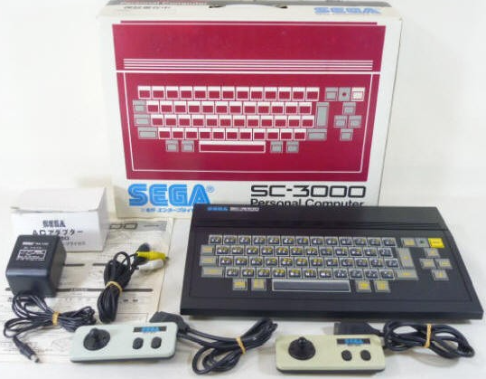

Evolution of Console


패미컴
_ 1983
닌텐도의 첫 카트리지 교환식 게임기, 기존 닌텐도 게임들과 슈퍼마리오,
파이널 판타지 등 명작 게임들이 발매되며 일본 시장 판매 1위를 하게
되었다.
북미쪽에선 게임 시장을 다시 살려준 구세주, 국내엔 세가 마스터 시스템과
함께 게임기 시장을 연 게임기로 게임 역사에 큰 의미를 가진 게임기다.
SG-1000, SG-3000
_ 1983
세가가 처음 제작한 게임기, 두 기종을 동시에 발매한 게임기, 1000은
오로지 게임만, 3000은 컴퓨터로도 활용할 수 있게 제작하여 출시했다.
성능면에서 3세대 게임기 치곤 2세대와 큰 차이가 없는 성능의 게임기였고,
닌텐도 뒤엔 서드파티 회사들이 있었지만 세가는 오로지 자사 게임들만
내놓았기에 기능, 다양성에서 모두 밀리게 되었다.
슈퍼 카세트 비전
_ 1984
에폭사의 마지막 불꽃, 저렴한 가격을 전면에 내세운 게임기, 그래픽은
패미컴보다 높은 수준이었지만 닌텐도와 비교해 한참 모자란 게임 수,
성능은 좋은데 그 성능을 제대로 발휘하는 게임이 없었던 점 등의 문제점과
함께 묻히게 된다.
재믹스
_ 1985
대우전자가 만든 국산 게임기, 아스키 8비트 컴퓨터인 MSX를 기반으로 만든
게임기라 MSX로 할 수 있던 게임들을 그대로 즐길 수 있었다.
국내 게임기 시장을 독점하고 있었지만 삼성이 세가 마스터 시스템을,
현대가 패미컴을 수입해오며 재믹스의 짧은 전성기는 막을 내린다.
아타리 7800
_ 1986
아타리 5200 후속작, 1984년 출시 예정으로 아타리 쇼크 여파로 잠깐
판매되었다 중단되고, 2년 후 1986년 다시 정식 발매되었다.
아타리 7800이지만 아타리에서 직접 제작하지 않고 GCC라는 업체에 외주를
줘서 만든 게임기다. 기존 아타리 판매 정책과 다르게 저렴한 가격을
내세웠지만 패미컴과 세가 마스터 시스템을 잡기에 한참 모자란
게임기였다.